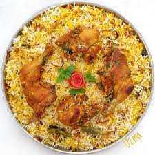

Chicken Biryani

Description:
This is a delicious Pakistani/Indian rice dish which is often reserved for very special occasions such as weddings, parties, or holidays such as Ramadan. It has a lengthy preparation, but the work is definitely worth it. For biryani, always use long grain rice. Basmati rice with its thin, fine grains is the ideal variety to use. Ghee is butter that has been slowly melted so that the milk solids and golden liquid have been separated and can be used in place of vegetable oil to yield a more authentic taste.
Ingredients:
- 4 tablespoons vegetable oil
- 4 small potatoes, peeled and halved
- 2 large onions, finely chopped
- 2 cloves garlic, minced
- 1 tablespoon minced fresh ginger root
- 1/2 teaspoon chili powder
- 1/2 teaspoon ground black pepper
- 1/2 teaspoon ground turmeric
- 1 teaspoon ground cummin
- 1 teaspoon salt
- 2 medium tomatoes, peeled and chopped
- 2 tablespoons plain yogurt
- 2 tablespoons chopped fresh mint leaves
- 1/2 teaspoon ground cardamom
- 1 (2 inch) piece cinnamon stick
- 3 pounds boneless, skinless chicken pieces cut into chunks
- 2 1/2 tablespoons vegetable oil
- 1 large onion, diced
- 1 pinch powdered saffron
- 5 pods cardamom
- 3 whole cloves
- 1 (1 inch) piece cinnamon stick
- 1/2 teaspoon ground ginger
- 1 pound basmati rice
- 4 cups chicken stock
- 1 1/2 teaspoons salt
Steps:
- In a large skillet, in 2 tablespoons vegetable oil (or ghee) fry potatoes until brown, drain and reserve the potatoes. Add remaining 2 tablespoons oil to the skillet and fry onion, garlic and ginger until onion is soft and golden. Addd chili, pepper, turmeric, cumin, salt and the tomatoes. Fry, stirring constantly for 5 minutes. Add yogurt, mint, cardamom and cinnamon stick. Cover and cook over low heat, stirring occasionally until the tomatoes are cooked to a pulp. It may be necessary to add a little hot water if the mixture becomes too dry and starts to stick to the pan.
- When the mixture is thick and smooth, add the chicken pieces and stir well to coat them with the spice mixture. Cover and cook over very low heat until the chicken is tender, approximately 35 to 45 minutes. There should only be a little very thick gravy left when chicken is finished cooking. If necessary cook uncovered for a few minutes to reduce the gravy.
- Wash rice well and drain in colander for at least 30 minutes.
- In a large skillet, heat vegetable oil (or ghee) and fry the onions until they are golden. Add saffron, cardamom, cloves, cinnamon stick, ginger and rice. Stir continuously until the rice is coated with the spices.
- In a medium-size pot, heat the chicken stock and salt. When the mixture is hot pour it over the rice and stir well. Add the chicken mixture and the potatoes; gently mix them into the rice. Bring to boil. Cover the saucepan tightly, turn heat to very low and steam for 20 minutes. Do not lift lid or stir while cooking. Spoon biryani onto a warm serving dish.